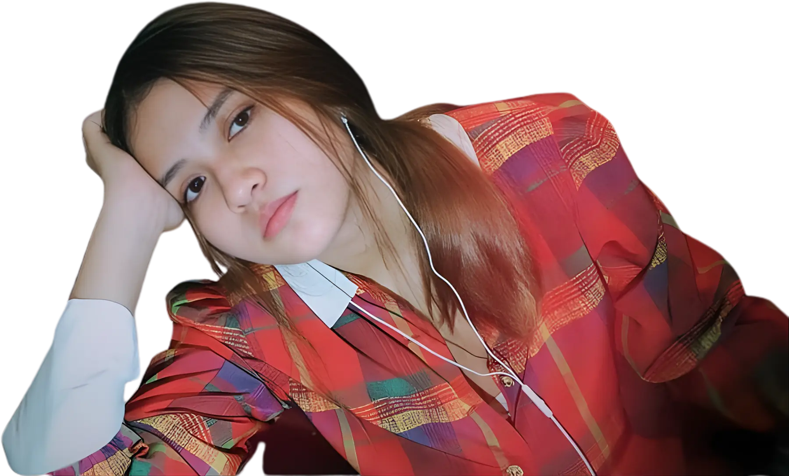
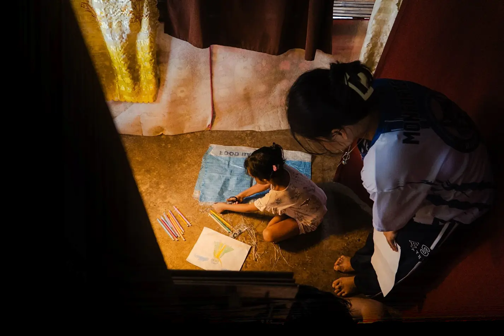
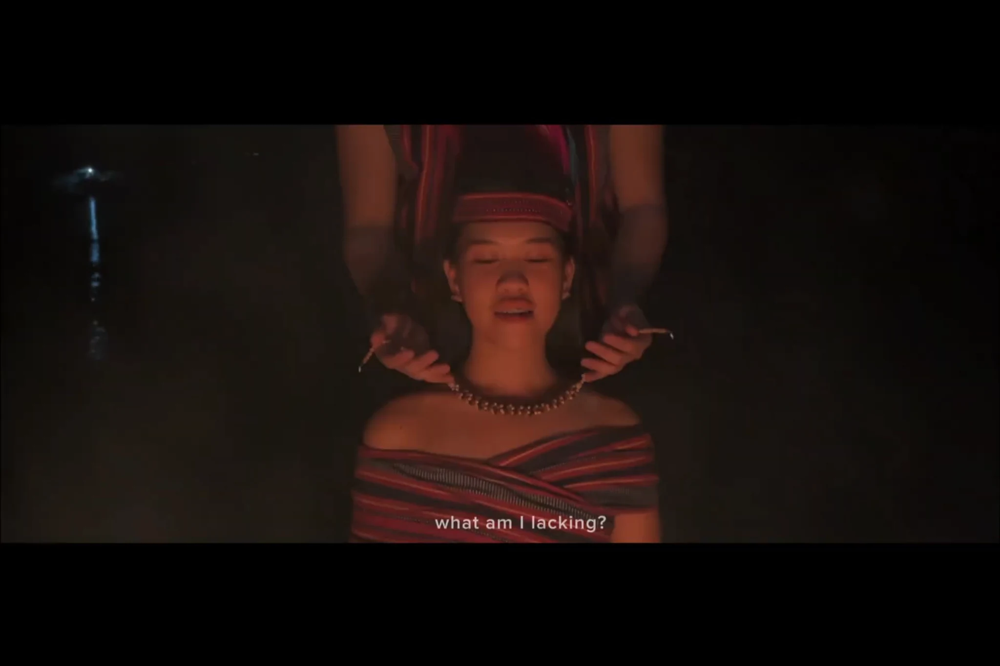
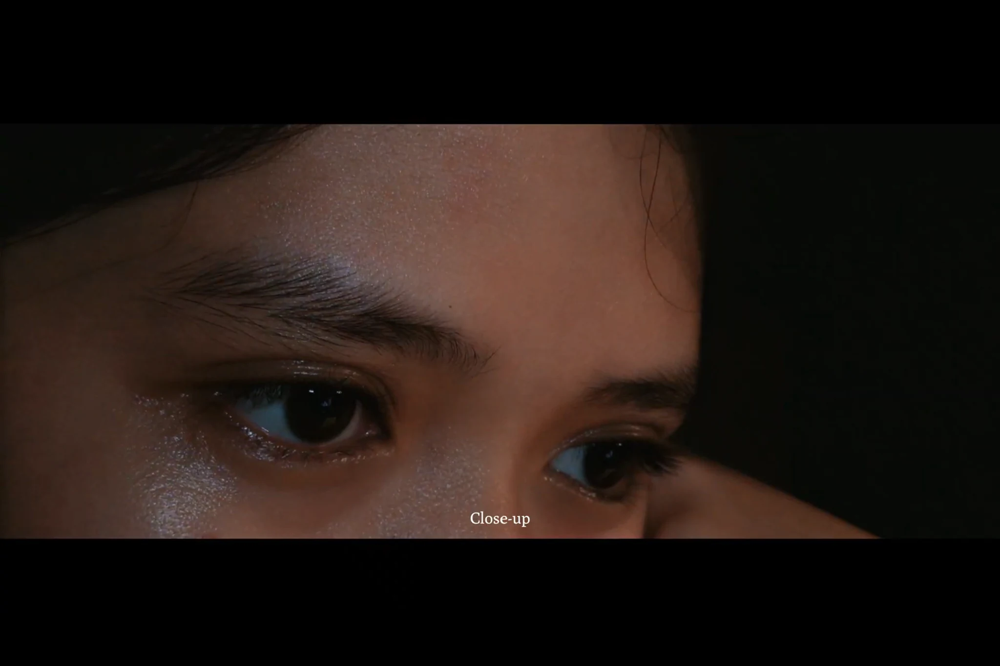
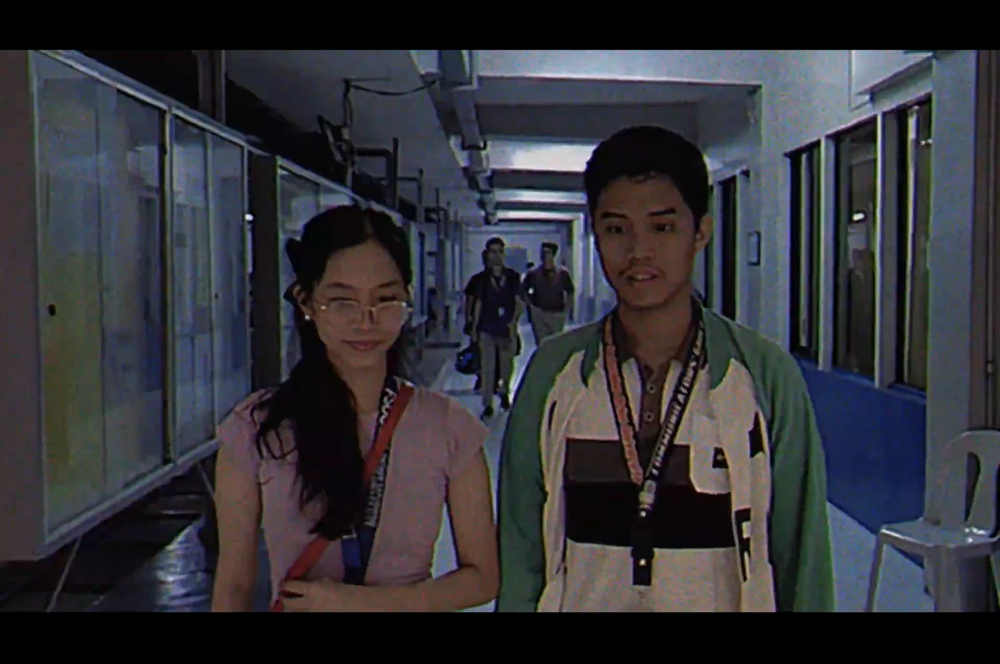
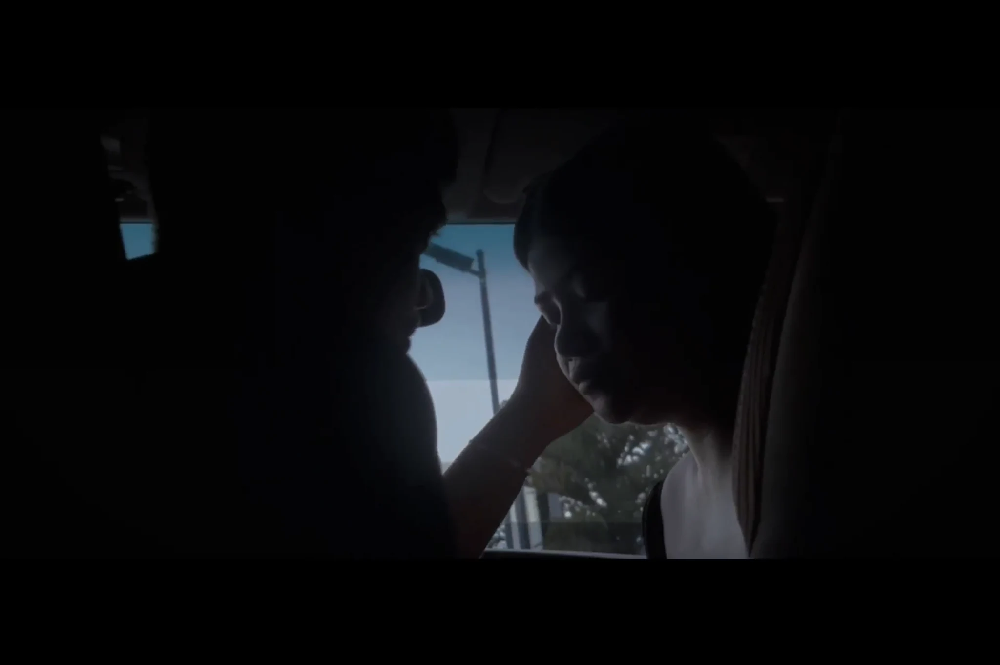
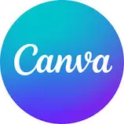

Anna Alone • Character
Stacey
Laughter becomes her shield—the smile that keeps the pain out of view.
Independent creative · Philippines
Video editor & visual storyteller
I turn ideas into films, edits, and images that make you feel something. From the first concept to the final frame.

EDITING — DIRECTION — CINEMATOGRAPHY — DESIGN
Scroll to discover02 Selected video work
Short films, music videos, and moments shaped with intention. Select a project to watch.

01Short film • 2025 • 14:59
Writer • Director • Cinematographer • Videographer
In a rural farming village, a girl who once dreamed of being a caped hero grows up fighting poverty, injustice, and displacement—until land reform offers her the chance to claim the home her mother fought for.

02Trailer • 2024 • 2:05
Editor • Director • Writer • Cinematographer / Videographer
A couple’s love is tested when the pressure to have a child forces them to face a future apart.

03Short film • 2:04
Editor • Director • Writer • Cinematographer / Videographer
As she tries to finish her homework, a young woman’s unspoken sadness seeps into the quiet rhythms of the night.

04Music video • 2024 • 3:12
Editor • Director • Writer • Cinematographer / Videographer
In the late 1990s, a college crush blooms through stolen glances and small moments, capturing the sweetness of first love.

05Music video • 2024 • 4:27
Editor • Director • Writer • Cinematographer / Videographer
When infidelity fractures a relationship, love turns into grief and betrayal in a story woven to the song’s emotional rhythm.
+ Recent edits
More formats, more range.
03 Graphic design
Publication materials, campaign graphics, and key art for university and film projects.
04 Featured creative project
Theatre visual identity • Character portraiture
A theatrical visual identity built around fractured memory, survival, and the different voices carried within one person.
The project moves from one central piece of key art into four character-led portraits. Each image uses its own lighting, color, expression, and emotional tone while remaining part of one cohesive visual world.
Explore the character seriesPortrait series • 01—04
Four distinct personas, connected through one theatrical story and one visual language.
Anna Alone • Character
Laughter becomes her shield—the smile that keeps the pain out of view.
Anna Alone • Character
Anger is her armor; beneath it is the instinct to survive.
Anna Alone • Character
A tender, wounded voice shaped by affection, shame, and words that stayed.
Anna Alone • Character
At the center, she searches for herself while every memory speaks in another voice.
Anna Alone • Complete visual project
05 About & services
Hi, I’m Jade—a video editor, director, cinematographer, and visual creative based in Bayugan City. I began taking private freelance projects in 2023 and have since worked across short films, music videos, podcasts, social content, promotional and advocacy videos, and publication design.
I’m drawn to storytelling that feels natural. I focus on pacing, clean cuts, purposeful B-roll, captions, shot selection, basic sound design, and visual flow. My Communication training at Father Saturnino Urios University also shapes how I approach each project through its audience, message, and purpose—not just how it looks on screen.
+ Creative toolkit
A focused workflow for editing, design, and color.

06 Your next story starts here
Have a film, a video, or an idea in mind? Tell me what you’re imagining.
jadephillineofficial@gmail.com